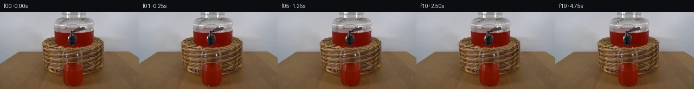

![首帧]()

Round 00
2026-11-05T02:30:37.387674+00:00像素候选变化代码 +89/−0inspection 更新
pixels 8de5986b5f0743a1 · code 44f969ae78d59393
查看本轮 generate.py 真实 diff
--- previous/generate.py
+++ current/generate.py
@@ -0,0 +1,89 @@
+#!/usr/bin/env python3
+"""Generate the stationary 20-frame PixelWorld-Text sequence.
+
+The prompt specifies a locked-off shot and a stationary dispenser, with no
+described valve actuation or flow. The physically faithful continuation is
+therefore an exact temporal hold of the supplied RGB frame.
+"""
+
+from pathlib import Path
+
+import numpy as np
+from PIL import Image, ImageDraw
+
+import artifact_io
+
+
+ROOT = Path(__file__).resolve().parent
+WIDTH, HEIGHT, COUNT = 256, 144, 20
+
+
+def make_frames() -> np.ndarray:
+ source = np.asarray(Image.open(ROOT / "first_frame.png").convert("RGB"), dtype=np.uint8)
+ if source.shape != (HEIGHT, WIDTH, 3):
+ raise ValueError(f"unexpected source shape: {source.shape}")
+ # np.repeat makes independent frame storage while preserving every RGB byte.
+ return np.repeat(source[None, ...], COUNT, axis=0)
+
+
+def save_transition_check(frames: np.ndarray) -> None:
+ """Write a numeric transition diagnostic without modifying output frames."""
+ canvas = Image.new("RGB", (1024, 206), (24, 27, 34))
+ draw = ImageDraw.Draw(canvas)
+
+ # Four full-frame checkpoints make global framing/camera stability inspectable.
+ for column, frame_index in enumerate((0, 6, 13, 19)):
+ x = column * WIDTH
+ canvas.paste(Image.fromarray(frames[frame_index]), (x, 22))
+ draw.text((x + 5, 5), f"frame {frame_index:02d}", fill=(245, 247, 250))
+
+ # A thin per-transition difference strip: each 2-pixel column represents one
+ # adjacent pair; brightness would encode maximum channel difference.
+ strip_y = 178
+ draw.text((5, 163), "adjacent RGB difference strips (19 transitions)", fill=(220, 225, 232))
+ x = 5
+ for t in range(1, COUNT):
+ delta = np.abs(frames[t].astype(np.int16) - frames[t - 1].astype(np.int16))
+ max_delta = int(delta.max())
+ changed = int(np.any(delta != 0, axis=2).sum())
+ level = max_delta
+ draw.rectangle((x, strip_y, x + 33, strip_y + 12), fill=(level, level, level))
+ draw.text((x + 2, strip_y + 13), str(changed), fill=(175, 184, 197))
+ x += 53
+ canvas.save(ROOT / "transition_check.png")
+
+
+def verify(frames: np.ndarray) -> None:
+ source = np.asarray(Image.open(ROOT / "first_frame.png").convert("RGB"), dtype=np.uint8)
+ if not np.array_equal(frames[0], source):
+ raise AssertionError("frame 00 is not exactly first_frame.png")
+
+ packed = (
+ (frames[..., 0].astype(np.uint32) << 16)
+ | (frames[..., 1].astype(np.uint32) << 8)
+ | frames[..., 2].astype(np.uint32)
+ )
+ saved = np.load(ROOT / "pixels.npz")["pixels"]
+ expected_tensor = packed.transpose(1, 2, 0)
+ if saved.dtype != np.uint32 or saved.shape != (HEIGHT, WIDTH, COUNT):
+ raise AssertionError(f"bad tensor format: {saved.dtype} {saved.shape}")
+ if not np.array_equal(saved, expected_tensor):
+ raise AssertionError("pixels.npz differs from generated frames")
+
+ for index in range(COUNT):
+ png = np.asarray(Image.open(ROOT / "frames" / f"{index:02d}.png").convert("RGB"))
+ if not np.array_equal(png, frames[index]):
+ raise AssertionError(f"frames/{index:02d}.png differs from tensor source")
+
+
+def main() -> None:
+ frames = make_frames()
+ artifact_io.save(frames, ROOT)
+ save_transition_check(frames)
+ verify(frames)
+ print("Verified exact frame 00, 20 RGB PNGs, and uint32 0xRRGGBB tensor.")
+
+
+if __name__ == "__main__":
… diff truncated; 2 more lines …